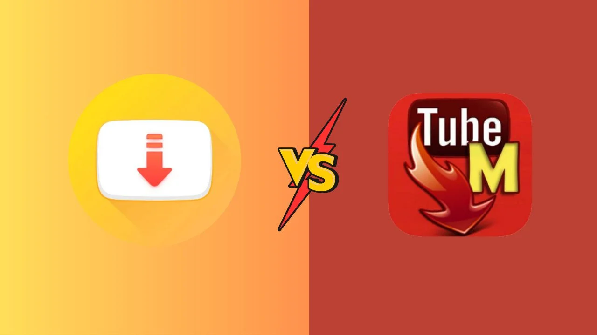

Download Snaptube APK or TubeMate: Which One Should You Choose?
In the ever-evolving world of mobile apps, downloading videos from the internet has become a daily ritual for many. Whether you're saving a hilarious cat video or a how-to tutorial, having the right tool at your disposal makes all the difference. Two popular apps in this realm are Snaptube APK and TubeMate. Both promise to streamline your video download experience, but which one should you download snaptube apk or tubemate? Let's dive into a comprehensive comparison that will help you make an informed choice—complete with a touch of humor to keep things lively.

What Are Snaptube APK and TubeMate?
Before we get into the nitty-gritty, let's clarify what these apps are and what they do.
- Snaptube APK: This app allows you to download videos from a variety of platforms including YouTube, Facebook, Instagram, and more. It's known for its user-friendly interface and wide range of supported sites. Imagine Snaptube as a Swiss Army knife for video downloads—compact, versatile, and always ready for action.
- TubeMate: Similarly, TubeMate is a video downloader that lets you grab videos from YouTube and other sites. It’s been around for a while and is well-regarded for its straightforward design and efficient download process. Think of TubeMate as the reliable old friend who knows exactly how you like your coffee—no frills, just the essentials.
Ease of Use
When it comes to downloading apps, ease of use is crucial. After all, the last thing you want is to wrestle with a complex interface when all you need is a quick download.
- Snaptube: Snaptube shines in this department with its intuitive design. Upon opening the app, you're greeted with a simple layout where you can easily search for videos or paste URLs. The download process is smooth and straightforward—no need for a manual to get started. Plus, Snaptube's search functionality is so good that it might just make you question why you ever used anything else.
- TubeMate: TubeMate also offers a user-friendly experience, but it's a bit more traditional. After finding your video on YouTube, you need to click the download button and choose your preferred resolution. It’s a no-nonsense approach that gets the job done, though it might lack the modern flair that Snaptube boasts. If TubeMate were a person, it would probably be the dependable but slightly grumpy librarian who’s always there to help you find what you need.
Download Quality and Options
Quality matters—nobody wants to watch a blurry video they just spent ages downloading. Both Snaptube and TubeMate offer options to choose your video quality, but how do they stack up?
- Snaptube: With Snaptube, you can download videos in various resolutions, ranging from 144p to 1080p and even 4K. This flexibility means you can save data by opting for lower resolutions or enjoy high-definition clarity if you’re planning to watch on a larger screen. It’s like having a video buffet where you can pick and choose exactly how much quality you want to feast on.
- TubeMate: TubeMate also offers a range of quality options, but it’s somewhat limited compared to Snaptube. While it supports resolutions up to 1080p, it might not cater to the higher resolutions that Snaptube does. If TubeMate were a movie, it might be a classic film—solid and dependable, but not necessarily the latest blockbuster with all the bells and whistles.
Compatibility and Download Speed
No one enjoys waiting forever for a video to download, so speed and compatibility are key factors to consider.
- Snaptube: Snaptube is compatible with most Android devices and runs smoothly on various versions of the operating system. Download speeds are generally fast, thanks to its efficient algorithms. If Snaptube were a race car, it would be the one that zips past the finish line while you’re still deciding what snacks to bring.
- TubeMate: TubeMate is similarly compatible with a wide range of Android devices. Its download speeds are commendable, though they might not always match the lightning-fast pace of Snaptube. Imagine TubeMate as a sturdy truck—reliable and capable, but not quite as speedy as a race car.
Ads and In-App Purchases
Ads and in-app purchases can be a nuisance, so it’s worth noting how each app handles these.
- Snaptube: Snaptube has ads, but they’re generally not too intrusive. The app’s core functionality is free, which means you can enjoy video downloads without forking out cash. It’s a bit like getting a free upgrade on your flight—you might have to put up with a few ads, but the ride is still enjoyable.
- TubeMate: TubeMate, on the other hand, is ad-supported but also offers a premium version with fewer ads and additional features. The free version is functional, though you might encounter more interruptions than with Snaptube. If TubeMate were a hotel, you’d get a decent room with the free version but could splurge on an upgrade for a more comfortable stay.
Security and Privacy
Security and privacy are crucial when dealing with third-party apps. You don’t want to compromise your personal information just for the sake of downloading videos.
- Snaptube: Snaptube is generally considered safe, but it’s always wise to download it from a reputable source to avoid any potential security risks. Think of it as taking precautions before a big road trip—you wouldn’t set off without checking your car, right?
- TubeMate: TubeMate is also regarded as safe, though the same advice applies: download from trusted sources. It's like having a reliable friend who always double-checks your directions before you head out on a road trip.
Final Verdict: Snaptube vs. TubeMate
So, which app should you choose? If you’re after a modern, versatile downloader with a range of quality options and a sleek design, Snaptube might be your best bet. It’s like the shiny new gadget that everyone’s talking about—stylish and packed with features.
On the other hand, if you prefer a more straightforward approach and don’t mind a few ads, TubeMate is a solid choice. It’s the dependable tool that gets the job done without fuss—kind of like that trusty old multitool you’ve had for years.
In the end, both Snaptube and TubeMate have their strengths, and the choice depends on your preferences. Either way, you’ll be well-equipped to download and enjoy your favorite videos. Just remember to keep an eye on those ads and always download from reliable sources. Happy downloading!